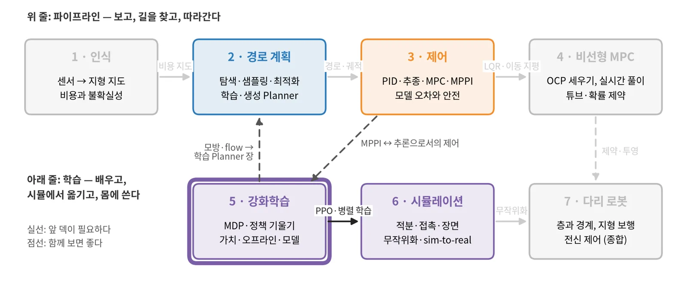
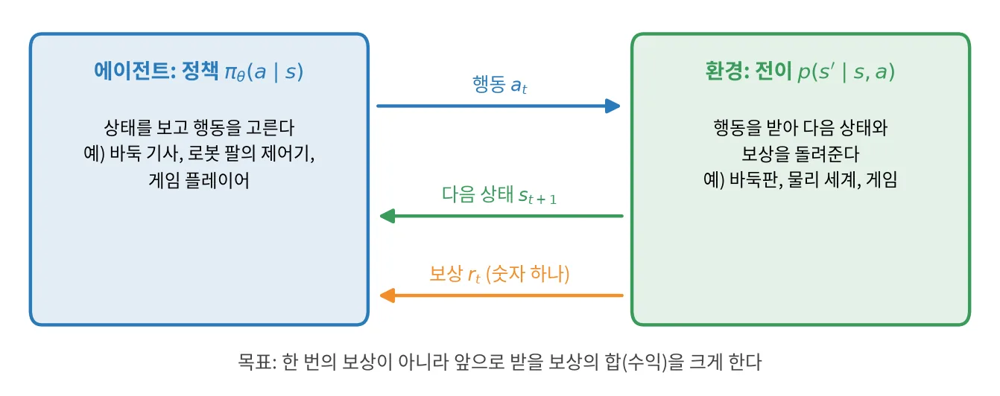
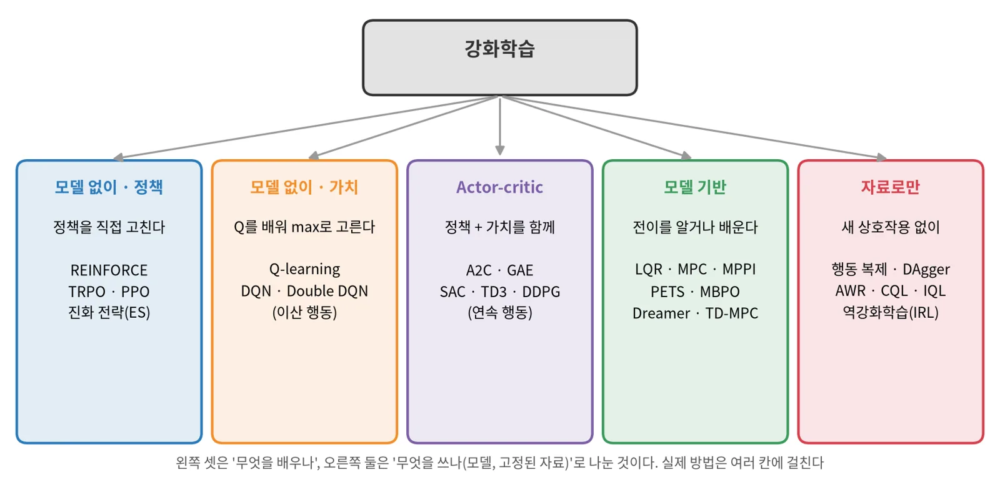
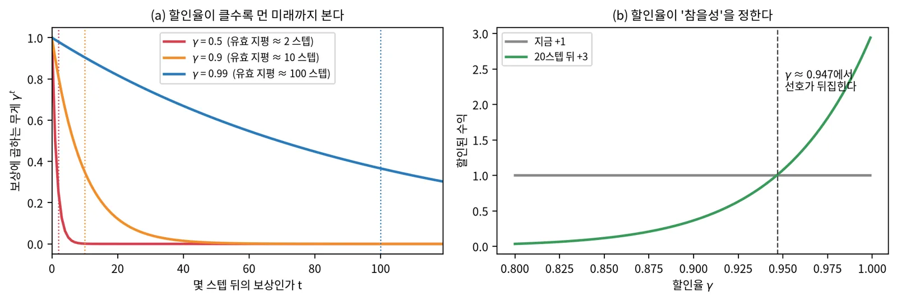
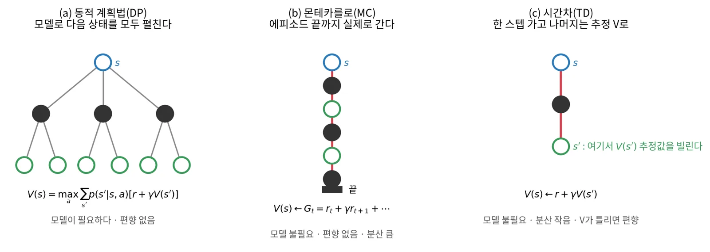
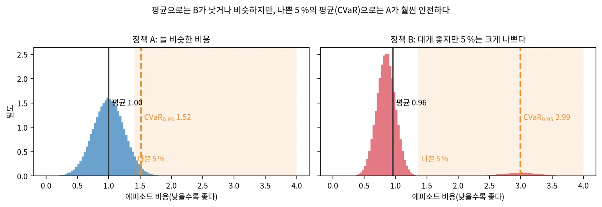
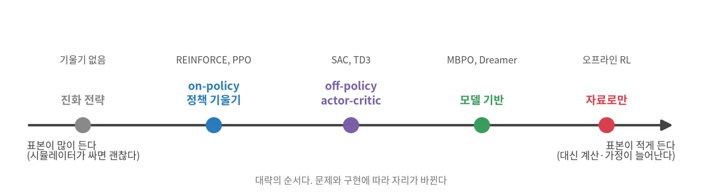

강화학습 기초 · 개념 공부 덱
정답 없이 보상만으로
행동을 배운다
MDP에서 PPO·SAC·오프라인 RL까지, 그림과 배경지식과 장단점으로 보는 강화학습의 핵심 개념
MDP · Bellman
정책 기울기 · PPO
Q-learning · DQN
오프라인 RL
모델 기반 · LQR
RLHF · 안전
| 장 | 주제 | 답하는 질문 |
|---|
| 0 | 시작 | 무엇을 알고 시작하나? 지도학습과 무엇이 다른가? |
| 1 | 문제 설정 | MDP, 할인, Bellman 식은 무엇이고, 왜 탐색과 분포 이동이 문제인가? |
| 2 | 정책 기울기 | 정책을 직접 미분해 고치려면? 분산은 어떻게 줄이나? |
| 3 | 가치 기반과 오프라인 | Q를 배우면 무엇이 좋고, 고정된 데이터로만 배우면 무엇이 깨지나? |
| 4 | 추론으로서의 제어, 모델 기반 | 엔트로피와 온도는 무슨 일을 하나? 모델을 쓰면 무엇을 얻고 잃나? |
| 5 | 보상과 생성 정책 | 보상은 어떻게 주나? 언어 모델·flow 정책·안전은 어떻게 다루나? |
| 6 | 정리 | 방법들을 한 장에서 비교하면? 무엇부터 공부하나? |
0 · 커리큘럼 5/7
학습 덱의 시작: 다른 덱 없이도 읽힌다

앞에서 가져올 것필수는 없다(확률과 기울기). 3 제어의 LQR·MPPI를 알면 4장이 쉽다.
뒤로 넘기는 것PPO·샘플 효율 → 6 시뮬레이션의 병렬 학습. PPO·증류 → 7 다리 로봇의 보행 정책.
함께 보면 좋은 것1장 행동 복제·DAgger와 5장 flow 정책을 본 뒤 2 경로 계획 3–4장(학습·생성 Planner)을 다시 본다.
0 · 배경지식
네 가지 배경지식이면 이 덱의 수식을 읽을 수 있다
확률기댓값은 샘플 평균으로 근사한다
\(\mathbb E_{x\sim p}[f(x)] \approx \frac1N\sum_i f(x_i)\). 강화학습의 거의 모든 식이 "궤적을 샘플링해 평균 낸다"로 계산된다.
최적화기울기를 따라 조금씩 움직인다
\(\theta \leftarrow \theta + \eta\, \nabla_\theta J(\theta)\). 보상을 키우므로 오르막(ascent)이다. η가 크면 튀고 작으면 느리다.
함수 근사신경망은 큰 표(table) 대신 쓰는 함수다
상태가 많으면 칸마다 값을 적는 표를 쓸 수 없다. \(V_\phi(s)\), \(\pi_\theta(a\mid s)\)처럼 파라미터로 근사하고 회귀로 맞춘다.
마르코프 성질다음 상태는 지금 상태와 행동만으로 정해진다
\(p(s_{t+1}\mid s_{1:t}, a_{1:t}) = p(s_{t+1}\mid s_t, a_t)\). 이 가정 덕분에 과거 전체가 아니라 지금만 보고 행동을 고를 수 있다.
0 · 배경지식 · 추정기
추정기는 편향과 분산 두 가지로 평가한다
$$\mathbb E\big[(\hat\theta - \theta)^2\big] = \underbrace{\big(\mathbb E[\hat\theta] - \theta\big)^2}_{\text{편향}^2} + \underbrace{\operatorname{Var}[\hat\theta]}_{\text{분산}}$$
편향평균이 과녁에서 벗어난 정도
샘플을 아무리 모아도 사라지지 않는다. 틀린 가치 추정값을 대신 쓰면 생긴다.
분산샘플마다 흔들리는 정도
샘플 N개 평균의 분산은 \(\sigma^2/N\)이다. 샘플을 늘리면 줄지만 비용이 든다.
트레이드오프조금의 편향으로 큰 분산을 줄인다
강화학습의 많은 기법(기준선, critic, GAE, 할인)이 이 트레이드오프다.
핵심: 2장과 3장의 방법들은 "편향을 얼마나 받아들이고 분산을 얼마나 줄이나"로 줄을 세울 수 있다.
0 · 지도학습과의 차이
정답 대신 점수를 받고, 내 행동이 다음 입력을 바꾼다

에이전트와 환경의 고리. 에이전트는 행동을 내고 상태와 보상을 받는다.
| 지도학습 | 강화학습 |
|---|
| 받는 신호 | 정답 라벨 | 숫자 하나의 보상 |
| 데이터 | 고정, 서로 독립(i.i.d.) | 내 행동이 다음 데이터를 만든다 |
| 피드백 시점 | 즉시 | 늦게 온다(끝에 한 번일 수도) |
| 넘을 수 있는 한계 | 라벨을 단 사람만큼 | 시연자보다 나을 수 있다 |
신용 할당
끝에 받은 보상이 어느 행동 덕인지 모른다.
탐색
해 보지 않은 행동의 결과는 알 수 없다.
분포 이동
정책이 바뀌면 만나는 상태도 바뀐다.
0 · 알고리즘 지도
방법은 "무엇을 배우나"와 "무엇을 쓰나"로 나뉜다

강화학습 알고리즘의 큰 갈래. 실제 방법은 여러 칸에 걸친다(예: SAC는 가치와 정책을 함께 배운다).
1 · 문제 설정
문제를 MDP로 적으면
풀 방법이 보인다
상태·행동·전이·보상을 정하고, 할인된 보상의 합을 키우는 정책을 찾는다.
1 · 용어
아홉 개의 기호만 알면 강화학습 수식을 읽을 수 있다
| 기호 | 이름 | 뜻 |
|---|
| \(s_t\), \(o_t\) | 상태, 관측 | 세계의 지금 모습. 관측은 그중 센서가 본 일부 |
| \(a_t\) | 행동 | 에이전트가 고르는 것(이산: 버튼, 연속: 토크·속도) |
| \(\pi_\theta(a\mid s)\) | 정책 | 상태에서 행동의 확률분포. θ가 학습할 파라미터 |
| \(r(s,a)\) | 보상 | 한 스텝의 점수. 설계자가 정한다 |
| \(\tau\) | 궤적 | \((s_1,a_1,s_2,a_2,\dots)\). 한 번 rollout한 기록, 끝이 있으면 에피소드 |
| \(G_t\) | 수익(return) | t부터 받을 할인된 보상의 합 \(\sum_k \gamma^k r_{t+k}\) |
| \(V^\pi(s)\) | 상태 가치 | s에서 π를 따를 때 수익의 기댓값 |
| \(Q^\pi(s,a)\) | 행동 가치 | s에서 a를 한 뒤 π를 따를 때 수익의 기댓값 |
| \(A^\pi(s,a)\) | advantage | \(Q - V\). 평소보다 얼마나 나은 행동인가 |
1 · MDP
목표는 수익의 기댓값이 가장 큰 정책을 찾는 것이다
$$J(\theta) = \mathbb E_{\tau \sim p_\theta(\tau)} \Big[ \sum_t \gamma^{t} r(s_t, a_t) \Big]$$
$$p_\theta(\tau) = p(s_1) \prod_t \pi_\theta(a_t\mid s_t)\, p(s_{t+1}\mid s_t, a_t)$$
 5×5 격자 MDP를 가치 반복으로 푼 결과. 목표 +1, 검은 칸은 함정 −1, 매 스텝 −0.04, 0.1의 확률로 옆으로 미끄러진다. γ가 작으면 함정 근처를 더 조심한다.
5×5 격자 MDP를 가치 반복으로 푼 결과. 목표 +1, 검은 칸은 함정 −1, 매 스텝 −0.04, 0.1의 확률로 옆으로 미끄러진다. γ가 작으면 함정 근처를 더 조심한다.
1 · 할인율
할인율 γ는 에이전트가 얼마나 먼 미래까지 볼지 정한다

(a) t스텝 뒤 보상에 곱하는 무게 \(\gamma^t\)와 유효 horizon \(1/(1-\gamma)\) (b) 지금의 +1과 20스텝 뒤의 +3 중 무엇이 나은지는 γ가 정한다
수학적 이유무한히 긴 문제에서도 수익이 유한하다(\(|G| \le r_{\max}/(1-\gamma)\)).
γ가 크면멀리 보지만 수익의 분산이 커지고 학습이 느리다.
γ가 작으면빨리 배우지만 근시안이 되어 늦게 오는 큰 보상을 놓친다.
1 · Bellman 식
가치는 "지금 보상 + 다음 상태의 가치"로 스스로를 정의한다
$$Q^\pi(s, a) = r(s, a) + \gamma\, \mathbb E_{s' \sim p,\ a' \sim \pi} \big[ Q^\pi(s', a') \big]$$
$$Q^*(s, a) = r(s, a) + \gamma\, \mathbb E_{s'} \big[ \max_{a'} Q^*(s', a') \big]$$

가치를 추정하는 세 방법의 백업 도식. DP는 모델로 모든 갈래를, MC는 끝까지 한 갈래를, TD는 한 스텝만 가고 나머지를 추정값으로 채운다.
핵심: 왼쪽 식을 배우면 정책 평가, 오른쪽 식(max)을 배우면 Q-learning이다.
1 · 탐색과 활용
모르는 행동도 가끔 해 봐야 더 좋은 것을 찾는다
 (a) 10-armed 밴딧에서 네 전략의 누적 regret(낮을수록 좋다) (b) UCB는 덜 해 본 arm에 낙관 보너스를 더해 고른다
(a) 10-armed 밴딧에서 네 전략의 누적 regret(낮을수록 좋다) (b) UCB는 덜 해 본 arm에 낙관 보너스를 더해 고른다
ε-greedyε 확률로 무작위 행동
장점 가장 단순하다
단점 이미 나쁜 걸 아는 행동도 계속 해 본다
UCB불확실할수록 낙관적으로
장점 덜 해 본 행동을 체계적으로 시도한다
단점 큰 상태 공간에서 "몇 번 해 봤나"를 세기 어렵다
Thompson사후분포에서 샘플링
장점 불확실성에 비례해 탐색한다
단점 사후분포를 유지해야 한다
1 · 모방학습
행동 복제는 쉽지만 작은 실수가 쌓여 큰 이탈이 된다
$$\max_\theta \sum_{(s,a)\in\mathcal D} \log \pi_\theta(a \mid s)$$
 (a) 시연 궤적의 범위 밖에서 틀린 정책은 한 번 벗어나면 돌아오지 못한다 (b) 실수 확률 ε이 작아도 누적 실수는 horizon T의 제곱으로 는다(DAgger는 선형) (c) 왼쪽·오른쪽 회피 시연을 평균하면 장애물로 간다
(a) 시연 궤적의 범위 밖에서 틀린 정책은 한 번 벗어나면 돌아오지 못한다 (b) 실수 확률 ε이 작아도 누적 실수는 horizon T의 제곱으로 는다(DAgger는 선형) (c) 왼쪽·오른쪽 회피 시연을 평균하면 장애물로 간다
핵심: 학습 때 본 상태와 실행 때 만나는 상태가 달라지는 것이 분포 이동이다.
1 · 장단점
모방은 빠르지만 시연자의 실력과 시연 범위를 넘지 못한다
| 방법 | 어떻게 | 장점 | 단점 |
|---|
| 행동 복제(BC) | 시연 (s, a)에 지도학습 | 보상·시뮬레이터가 필요 없다. 가장 빠르다 | 분포 이동, 여러 모드의 평균, 시연자를 넘지 못한다 |
| DAgger | 내 정책이 만난 상태에 전문가가 다시 라벨 | 분포 이동을 직접 줄인다 | 언제든 물어볼 전문가가 필요하다 |
| 역강화학습(IRL) | 시연이 최적이 되는 보상을 찾고 그 보상으로 RL | 보상은 새 환경에도 옮겨진다 | inner loop에 RL이 들어가 비싸다. 보상이 하나로 정해지지 않는다 |
| BC + RL fine-tuning | BC로 시작하고 보상으로 fine-tuning한다 | 탐색이 쉬워지고 시연을 넘을 수 있다 | RL 단계에서 BC 정책에서 멀어지지 않게 제약해야 한다 |
2 · 정책 기울기
잘된 궤적의 확률은 올리고
못된 궤적의 확률은 내린다
보상도 환경도 미분하지 않는다. 대가는 큰 분산이고, 이 장은 그 분산을 줄이는 기법들이다.
2 · 배경지식 · 로그 미분 트릭
로그 미분 트릭 하나로 환경을 미분하지 않고도 gradient를 얻는다
$$\nabla_\theta p_\theta(\tau) = p_\theta(\tau)\, \nabla_\theta \log p_\theta(\tau) \quad\Rightarrow\quad \nabla_\theta J = \mathbb E_{\tau\sim p_\theta}\big[\nabla_\theta \log p_\theta(\tau)\, R(\tau)\big]$$
$$\nabla_\theta \log p_\theta(\tau) = \nabla_\theta \Big[\log p(s_1) + \sum_t \log \pi_\theta(a_t\mid s_t) + \sum_t \log p(s_{t+1}\mid s_t,a_t)\Big] = \sum_t \nabla_\theta \log \pi_\theta(a_t\mid s_t)$$
좋은 소식전이 확률이 기울기에서 사라진다
θ와 무관한 항은 미분하면 0이다. 그래서 환경 모델을 몰라도, 보상이 미분 불가여도 된다.
나쁜 소식궤적 몇 개로 기댓값을 근사한다
R(τ)는 운에 크게 흔들리므로 기울기 추정의 분산이 크다.
2 · REINFORCE
기준선을 빼면 기울기의 평균은 그대로, 분산은 크게 준다
$$\nabla_\theta J(\theta) \approx \frac1N \sum_{i} \sum_t \nabla_\theta \log \pi_\theta(a_t^i \mid s_t^i)\, \big(\hat Q_t^i - b(s_t^i)\big)$$
 (a) 샘플 16개로 낸 기울기 추정: 기준선이 없으면 표준편차 5.8, 배치 평균을 빼면 1.6. 평균은 둘 다 참값 4 (b) seed 20개의 학습 곡선
(a) 샘플 16개로 낸 기울기 추정: 기준선이 없으면 표준편차 5.8, 배치 평균을 빼면 1.6. 평균은 둘 다 참값 4 (b) seed 20개의 학습 곡선
장점구현이 몇 줄이다. 이산·연속 행동 모두 된다. 편향이 없다.
단점분산이 커서 샘플이 많이 든다. on-policy라 한 번 고치면 데이터를 버린다.
2 · 진화 전략
진화 전략은 파라미터에 잡음을 주고 점수만으로 방향을 찾는다
$$\nabla_\theta\, \mathbb E_{\epsilon\sim\mathcal N(0,I)} \big[ F(\theta + \sigma\epsilon) \big] \approx \frac{1}{n\sigma} \sum_{i=1}^n F(\theta+\sigma\epsilon_i)\, \epsilon_i$$
① 흔들기
파라미터 θ 주변에 잡음 ε를 n개 뽑는다
→
② rollout
각 θ+σε로 에피소드를 돌려 점수 F를 얻는다
→
③ 기울이기
점수가 높았던 잡음 쪽으로 θ를 옮긴다
장점- 점수가 계단 함수(성공/실패)여도 된다
- 에피소드 단위라 신용 할당·할인이 필요 없다
- worker 사이에 잡음 seed만 주고받아 병렬이 쉽다
단점- 파라미터가 많으면 필요한 샘플이 크게 는다
- 스텝별 정보를 버려 샘플 효율이 가장 낮은 편이다
- 작은 정책에 잘 맞고 큰 신경망에는 불리하다
2 · Actor-critic과 GAE
critic이 앞을 내다보면 분산은 줄고 편향이 생긴다
$$\delta_t = r_t + \gamma V_\phi(s_{t+1}) - V_\phi(s_t)$$
$$\hat A_t^{\mathrm{GAE}(\lambda)} = \sum_{l \ge 0} (\gamma \lambda)^l\, \delta_{t+l}$$
- actor는 정책 π, critic은 가치 V를 배운다
- \(\lambda = 0\): 한 스텝 TD — 분산 작고 편향 있음
- \(\lambda = 1\): 몬테카를로 — 편향 없고 분산 큼
 상태 21개의 random walk에서 일부러 틀리게 만든 critic으로 잰 λ별 advantage 추정의 편향과 분산. 흔히 0.95 안팎을 쓴다
상태 21개의 random walk에서 일부러 틀리게 만든 critic으로 잰 λ별 advantage 추정의 편향과 분산. 흔히 0.95 안팎을 쓴다
2 · TRPO와 PPO
PPO는 확률 비율을 clip해 한 번에 너무 멀리 가지 않게 한다
$$L^{\mathrm{CLIP}}(\theta) = \mathbb E_t \Big[ \min\big( \rho_t \hat A_t,\ \operatorname{clip}(\rho_t, 1-\epsilon, 1+\epsilon)\, \hat A_t \big) \Big], \qquad \rho_t = \frac{\pi_\theta(a_t\mid s_t)}{\pi_{\mathrm{old}}(a_t\mid s_t)}$$
 (a)(b) ε = 0.2로 clip한 목적 함수: advantage가 양이면 1+ε에서, 음이면 1−ε에서 더 밀지 않는다 (c) 같은 KL 거리라도 파라미터 거리는 방향마다 다르다
(a)(b) ε = 0.2로 clip한 목적 함수: advantage가 양이면 1+ε에서, 음이면 1−ε에서 더 밀지 않는다 (c) 같은 KL 거리라도 파라미터 거리는 방향마다 다르다
장점구현이 쉽고 하이퍼파라미터에 덜 민감하다. 병렬 시뮬과 잘 맞아 보행·조작·언어 모델 fine-tuning의 표준이 됐다.
단점여전히 on-policy라 샘플 효율이 낮다. log-probability가 필요해 diffusion·flow 정책에 바로 쓰기 어렵다.
2 · 장단점
정책 기울기 계열은 안정성을 얻는 대신 샘플을 많이 쓴다
| 방법 | 기울기 신호 | 장점 | 단점 |
|---|
| REINFORCE | 몬테카를로 수익 − 기준선 | 가장 단순, 편향 없음 | 분산이 매우 크다 |
| 진화 전략 | 파라미터 잡음 × 점수 | 미분 불가 점수, 병렬 쉬움 | 파라미터가 많으면 비효율 |
| A2C + GAE | critic의 advantage | 분산이 작고 매 스텝 갱신 | critic 오차가 편향이 된다 |
| TRPO | KL 제약 아래 advantage | 단조 개선에 가까운 보장 | 2차 계산이 무겁고 구현이 복잡 |
| PPO | clip한 비율 × advantage | 쉽고 robust하다, 사실상 표준 | on-policy, log-probability 필요 |
공통 장점: 연속 행동과 확률적 정책을 자연스럽게 다룬다. 공통 단점: 방금 모은 데이터만 쓰므로 샘플이 많이 든다.
3 · 가치 기반과 오프라인
가치를 배우면 데이터를 다시 쓸 수 있지만
max가 잡음을 과대평가한다
새 상호작용 없이 모은 데이터로만 배우면 그 오차를 바로잡을 길이 없다.
3 · Q-learning
Q-learning은 Bellman 최적 식을 맞추고, max는 가치를 과대평가한다
$$\mathcal L(\phi) = \mathbb E_{(s, a, r, s') \sim \mathcal D} \Big[ \big( Q_\phi(s, a) - r - \gamma \max_{a'} Q_{\bar\phi}(s', a') \big)^2 \Big]$$
 (a) tabular Q-learning의 학습 곡선 (b) 수렴한 가치와 정책 (c) 참 Q가 모두 0이어도 추정에 잡음이 있으면 max는 위로 치우친다. 행동이 많을수록 더 심하다. Double Q는 이를 거의 없앤다
(a) tabular Q-learning의 학습 곡선 (b) 수렴한 가치와 정책 (c) 참 Q가 모두 0이어도 추정에 잡음이 있으면 max는 위로 치우친다. 행동이 많을수록 더 심하다. Double Q는 이를 거의 없앤다
장점off-policy라 쌓아 둔 데이터를 계속 다시 쓴다. 샘플 효율이 높다.
단점신경망과 함께면 수렴 보장이 없다. 연속 행동에서는 max를 풀기 어렵다.
3 · DQN
DQN은 세 가지 장치로 신경망 Q-learning을 안정시킨다
experience replay데이터를 버퍼에 쌓고 무작위로 뽑는다
연속된 샘플의 상관을 끊고, 한 번 모은 데이터를 여러 번 쓴다.
타깃 네트워크목표값은 느리게 바뀌는 사본 \(Q_{\bar\phi}\)로 계산한다
회귀 타깃이 매 스텝 움직이는 것을 막는다.
Double Q행동 고르기와 값 매기기를 다른 네트워크가 한다
max의 과대평가를 줄인다(Double DQN).
장점- 화면 픽셀만 보고 Atari 게임 여럿을 한 구조로 배웠다
- off-policy라 샘플 효율이 높다
단점- 이산 행동 전용이다(연속은 DDPG·TD3·SAC)
- 하이퍼파라미터에 민감하고 seed마다 결과가 크게 갈린다
함께 기억할 것: 함수 근사 + 부트스트랩 + off-policy가 겹치면 발산할 수 있다(deadly triad).
3 · on-policy와 off-policy
on-policy는 방금 모은 데이터만, off-policy는 쌓아 둔 데이터도 쓴다
on-policy (REINFORCE, PPO)
off-policy (Q-learning, SAC, TD3)
아무 정책으로 수집
→
리플레이 버퍼
→
여러 번 갱신
장점샘플 효율이 높고 시연·옛 데이터도 섞을 수 있다.
단점critic이 데이터 분포 밖에서 틀리면 막을 장치가 따로 필요하다.
핵심: 이 구분은 "누가 모은 데이터로 배워도 되나"의 질문이다. 끝까지 가면 새 수집이 없는 오프라인 RL이 된다.
3 · 오프라인 RL
오프라인 RL은 데이터 밖 행동의 가치를 믿지 않는 법을 배운다
정책 제약AWR Advantage-Weighted Regression
데이터에 있는 행동만, 좋았던 만큼 무게를 실어 따라 한다
보수적 가치CQL Conservative Q-Learning
Q를 배울 때 데이터 밖 행동의 값을 페널티로 끌어내린다
in-sample 기댓값IQL Implicit Q-Learning
데이터 밖 행동은 묻지 않고, 데이터 안 행동의 높은 쪽 값으로 배운다
 한 상태의 오프라인 문제. 그냥 맞춘 Q는 데이터 없는 a=−2.00을 고르고 참 보상은 0.00이다. 보수적 Q는 +0.15(참 0.99), AWR은 +0.12(참 0.98)를 고른다
한 상태의 오프라인 문제. 그냥 맞춘 Q는 데이터 없는 a=−2.00을 고르고 참 보상은 0.00이다. 보수적 Q는 +0.15(참 0.99), AWR은 +0.12(참 0.98)를 고른다
핵심: 새로 시도해 볼 수 없으니, 데이터가 없는 곳에서 회귀가 내놓은 "높은 값"을 고치지 못한다.
3 · AWR
AWR은 advantage의 지수로 가중한 행동 복제다
$$\pi_{\mathrm{new}} = \arg\max_\pi\ \mathbb E_{(s, a) \sim \mathcal D} \Big[ \log \pi(a \mid s)\, \exp\big( A(s, a) / \beta \big) \Big]$$
숫자로advantage +0.3, 0, −0.3, β = 0.15
가중은 7.39, 1, 0.135이고 정규화하면 0.867, 0.117, 0.016이다.
좋은 행동을 거의 다 따라 하고 나쁜 행동은 거의 무시한다.
장점지도학습 손실에 가중치만 곱하면 된다. 어떤 정책 구조(가우시안, diffusion, flow)에도 붙는다. 데이터 밖 행동을 만들지 않아 안전하다.
단점데이터에 없는 더 좋은 행동은 끝내 찾지 못한다. β가 작으면 소수 샘플에 몰려 분산이 커진다.
3 · CQL
CQL은 데이터 밖 행동의 Q를 페널티로 끌어내린다
$$\min_Q\ \mathcal L_{\mathrm{TD}}(Q) + \alpha \Big( \mathbb E_{s \sim \mathcal D} \Big[ \log \sum_a e^{Q(s, a)} \Big] - \mathbb E_{(s, a) \sim \mathcal D} \big[ Q(s, a) \big] \Big)$$
어떻게모든 행동은 누르고, 데이터 행동은 올린다
앞 항(soft max)은 Q가 큰 행동일수록 세게 누르고, 뒤 항은 데이터에 있는 행동만 다시 올린다. 데이터 안에서는 둘이 거의 상쇄되어 데이터 밖에서만 값이 내려간다.
숫자로Q = 0.5, 0.8, 1.5 · 1.5인 a₃는 데이터에 없다
앞 항의 기울기는 softmax라 0.20, 0.27, 0.54다. 데이터가 a₁과 a₂를 반씩 담으면 뒤 항은 0.5, 0.5, 0이다.
페널티 항만 보면 Q가 움직이는 방향은 +0.30, +0.23, −0.54다.
장점Q가 참값보다 낮은 쪽(보수적)으로 배워져 데이터 밖 행동에 속지 않는다.
단점α가 크면 좋은 새 행동도 깎인다. 연속 행동은 앞 항을 샘플로 근사해 계산이 든다.
3 · IQL
IQL은 데이터 밖 행동을 한 번도 묻지 않고 가치를 배운다
$$\mathcal L_V = \mathbb E_{\mathcal D} \big[ L_2^\tau \big( Q(s, a) - V(s) \big) \big],\ \ L_2^\tau(u) = \lvert \tau - \mathbb 1(u < 0) \rvert\, u^2, \qquad \mathcal L_Q = \mathbb E_{\mathcal D} \big[ \big( r + \gamma V(s') - Q(s, a) \big)^2 \big]$$
세 단계V, Q, 정책을 차례로 배운다
① V는 데이터 안 행동들의 Q 중 높은 쪽(expectile τ)을 맞춘다.
② Q의 목표는 r + γV(s′)다. max가 없으니 데이터 밖 행동을 묻지 않는다.
③ 정책은 AWR처럼 exp(A/β)로 가중해 따라 한다.
배경지식 · expectile데이터 행동의 Q = 0.2, 0.5, 0.9
τ = 0.5면 평균 0.53, τ = 0.7이면 0.65, τ = 0.9면 0.80이다.
τ를 1로 올릴수록 데이터 안의 최댓값 0.9에 다가간다. 데이터 밖의 더 큰 값은 처음부터 계산에 없다.
장점학습이 안정적이고 구현이 단순하다. 오프라인으로 배운 뒤 온라인 fine-tuning으로 이어 가기 쉽다.
단점데이터에 없는 행동은 끝까지 고르지 못한다. τ와 β 두 하이퍼파라미터를 맞춰야 한다.
3 · 세 방법 비교
데이터 밖 행동을 AWR은 피하고, CQL은 깎고, IQL은 묻지 않는다
| 방법 | 데이터 밖 행동을 다루는 법 | 배우는 것 | 하이퍼파라미터 | 약점 |
|---|
| AWR | 정책이 데이터의 행동만 advantage로 가중해 따라 한다 | V, 정책 | β: 작을수록 좋은 행동에 몰린다 | 데이터보다 멀리 가지 못한다 |
| CQL | Q 학습에 페널티를 더해 데이터 밖 값을 깎는다 | Q, 정책 | α: 페널티 세기 | α가 크면 좋은 새 행동도 깎인다 |
| IQL | Q와 V를 데이터 안 행동만으로 배운다 | Q, V, 정책 | τ, β | 데이터에 없는 행동은 고르지 못한다 |
비유지도에 없는 길을 두고, AWR은 가 본 길만 다시 고르고, CQL은 안 가 본 길에 감점을 주고, IQL은 안 가 본 길에는 점수를 매기지 않는다.
고르는 법: 데이터가 좋고 단순함이 중요하면 AWR·IQL, 데이터가 섞여 있고 과대평가가 걱정되면 CQL부터 시도한다.
4 · 추론으로서의 제어와 모델 기반
최적 행동 찾기를
확률 추론으로 다시 본다
엔트로피와 온도가 탐색을 정하고, 모델을 알면 미리 시뮬레이션해 보고 고를 수 있다. 대신 모델의 오차를 떠안는다.
4 · 최대 엔트로피 RL
보상과 함께 엔트로피도 키우면 탐색과 여러 해가 함께 남는다
$$p(\tau \mid \text{최적}) \propto p(\tau)\, \exp\Big( \sum_t r(s_t, a_t) \Big)$$
$$J_{\mathrm{ent}}(\pi) = \mathbb E_\pi \Big[ \sum_t r + \alpha\, \mathcal H\big( \pi(\cdot \mid s_t) \big) \Big]$$
정책으로 근사SAC
최적 정책은 \(\pi(a \mid s) \propto \exp(Q(s, a)/\alpha)\)다. off-policy actor-critic이다.
장점 연속 행동에서 샘플 효율과 안정성이 좋다. 단점 α 조정이 필요하다(자동 조정판이 흔하다).
행동 시퀀스를 직접 추론MPPI
모델로 행동 시퀀스 \(U_k\)를 rollout해 \(w_k \propto \exp(-J_k/\lambda)\)로 평균한다. 학습이 없다.
장점 비용이 미분 불가여도 된다. 단점 모델이 필요하고 매 스텝 계산이 많다.
4 · 배경지식 · KL 발산
KL의 방향이 "모두 덮기"와 "하나 고르기"를 가른다
$$D_{\mathrm{KL}}(p\,\Vert\,q) = \mathbb E_{x\sim p}\Big[\log \frac{p(x)}{q(x)}\Big]$$
항상 0 이상이고, p = q일 때만 0이다.
대칭이 아니다. \(D(p\Vert q) \ne D(q\Vert p)\).
 봉우리 둘인 참 분포 p를 가우시안 q 하나로 근사할 때 (a) forward KL은 두 모드를 다 덮는 넓은 q (b) reverse KL은 한 모드를 고르는 좁은 q
봉우리 둘인 참 분포 p를 가우시안 q 하나로 근사할 때 (a) forward KL은 두 모드를 다 덮는 넓은 q (b) reverse KL은 한 모드를 고르는 좁은 q
forward KL(p‖q)최대 가능도·행동 복제가 이것을 줄인다. 모드 사이 빈 곳에도 확률을 둔다.
reverse KL(q‖p)변분 추론·최대 엔트로피 RL이 이것을 줄인다. 안전하지만 다른 해를 잃는다.
4 · 온도
온도는 샘플 몇 개 분량의 정보를 믿을지 정한다
$$w_k = \frac{\exp(-J_k/\lambda)}{\sum_j \exp(-J_j/\lambda)}, \qquad N_{\mathrm{eff}} = \frac{1}{\sum_k w_k^2}$$
 넓고 얕은 골짜기, 좁고 깊은 골짜기, 가운데 언덕이 있는 비용. 같은 샘플 64개를 세 온도로 가중했다(빨간 선이 가중 평균)
넓고 얕은 골짜기, 좁고 깊은 골짜기, 가운데 언덕이 있는 비용. 같은 샘플 64개를 세 온도로 가중했다(빨간 선이 가중 평균)
λ = 0.03 · 낮은 온도유효 샘플 1.6개. 가장 좋은 샘플 하나에 몰린다. 잡음에 휘둘린다.
λ = 3 · 높은 온도유효 샘플 59.4개. 평균에 가까워져 두 골짜기 사이 언덕으로 갈 수 있다.
4 · 배경지식 · 최적 제어
모델이 선형이고 비용이 이차면 LQR이 최적 제어를 closed-form으로 준다
$$x_{t+1} = A x_t + B u_t, \qquad \min_u \sum_t x_t^\top Q x_t + u_t^\top R u_t \ \Rightarrow\ u_t = -K x_t$$
 이중 적분기(위치·속도)의 LQR. Q = diag(1, 0.1)에서 R을 바꾸면, R이 작을수록 입력을 세게 써서 빨리 원점에 간다
이중 적분기(위치·속도)의 LQR. Q = diag(1, 0.1)에서 R을 바꾸면, R이 작을수록 입력을 세게 써서 빨리 원점에 간다
장점Riccati 식으로 정확한 최적해를 빠르게 얻는다. 샘플이 필요 없다. 비선형 문제도 국소 선형화(iLQR)나 MPC로 넓힌다.
단점모델을 알아야 한다. 비용이 이차가 아니거나 접촉·충돌처럼 매끄럽지 않으면 바로 쓰기 어렵다.
4 · 모델 기반 RL
플래너는 배운 모델이 틀린 곳을 찾아가 이용한다
 (a) 데이터 밖에서 모델 앙상블이 갈라진다 (b) 모델 하나는 데이터 밖 a=−2.50을 골라 실제로 −2.06이 되고, 앙상블 평균−2σ는 참 최적과 같은 값을 낸다 (c) 한 스텝 오차가 작아도 길게 rollout하면 쌓인다
(a) 데이터 밖에서 모델 앙상블이 갈라진다 (b) 모델 하나는 데이터 밖 a=−2.50을 골라 실제로 −2.06이 되고, 앙상블 평균−2σ는 참 최적과 같은 값을 낸다 (c) 한 스텝 오차가 작아도 길게 rollout하면 쌓인다
짧은 rollout실제 상태에서 몇 스텝만 rollout한다
MBPO
latent 공간작은 latent 상태에서 rollout한다
Dreamer, TD-MPC2
4 · 장단점
모델 기반은 샘플을 아끼는 대신 모델 오차를 떠안는다
| 모델 없이(model-free) | 모델 기반(model-based) |
|---|
| 샘플 효율 | 낮다. 수백만 스텝이 흔하다 | 높다. 모델 rollout으로 샘플을 늘린다 |
| 최종 성능 | 충분히 배우면 높다 | 모델 오차가 상한이 되기 쉽다 |
| 계산 | 실행 때 가볍다(정책 한 번) | 계획하면 매 스텝 무겁다 |
| 새 목표로 옮기기 | 보상이 바뀌면 다시 배운다 | 모델은 그대로, 비용만 바꿔 다시 계획한다 |
| 해석·안전 | 정책이 왜 그랬는지 보기 어렵다 | 예측 궤적을 보고 제약을 걸 수 있다 |
실무: 둘을 섞는다. 모델로 계획하고 horizon 끝의 가치는 학습한 critic으로 채우거나(TD-MPC), 정책 출력을 MPC의 초기 해(warm start)로 쓴다.
5 · 보상과 생성 정책
보상을 어디서 얻고
어떤 정책에 넣을 것인가
보상 설계, 실패의 재활용, 시연에서 보상 찾기, 사람 선호, 생성 정책, 그리고 평균이 아닌 꼬리로 보는 안전.
5 · 보상 설계
보상을 잘못 주면 에이전트는 의도가 아니라 숫자를 쫓는다
희소 보상(sparse)성공하면 +1, 아니면 0
장점 의도를 정확히 말한다. 속일 틈이 적다.
단점 우연히 성공하기 전까지 배울 신호가 없다.
조밀한 보상(dense)목표까지 거리가 줄면 +
장점 매 스텝 신호가 있어 빨리 배운다.
단점 지름길을 찾는다(보상 해킹). 예: 제자리를 맴돌며 점수만 쌓기.
$$r'(s,a,s') = r(s,a,s') + \gamma\,\Phi(s') - \Phi(s)$$
안전한 방법: 위처럼 퍼텐셜 함수 Φ의 차이로 더한 보상(potential-based shaping)은 최적 정책을 바꾸지 않는다.
5 · Hindsight Experience Replay
실패한 궤적도 "실제로 간 곳"을 목표로 붙이면 성공 시연이 된다
 (a) 원래 목표 g에는 실패했지만, 실제로 지난 점 g′을 목표로 다시 붙이면 성공 사례가 된다 (b) 12칸 사슬, goal-conditioned Q-learning, seed 30개: relabeling이 학습을 앞당긴다
(a) 원래 목표 g에는 실패했지만, 실제로 지난 점 g′을 목표로 다시 붙이면 성공 사례가 된다 (b) 12칸 사슬, goal-conditioned Q-learning, seed 30개: relabeling이 학습을 앞당긴다
장점희소 보상 문제에서 reward shaping 없이 신호를 만든다. off-policy 방법 어디에나 붙는다.
단점목표를 입력으로 받는 정책(goal-conditioned RL)이어야 한다. "목표"를 상태로 적을 수 있는 과제에만 맞는다.
5 · 역강화학습
역강화학습은 시연을 보고 "무엇을 원했는가"를 거꾸로 찾는다
 (a) 시연 40개의 칸별 방문 수 (b) 참 보상(시연자만 안다) (c) MaxEnt IRL이 찾은 상태 보상. 목표가 가장 높고, 시연이 피한 쪽이 낮게 나온다
(a) 시연 40개의 칸별 방문 수 (b) 참 보상(시연자만 안다) (c) MaxEnt IRL이 찾은 상태 보상. 목표가 가장 높고, 시연이 피한 쪽이 낮게 나온다
장점보상은 정책보다 짧고 옮기기 쉽다. 환경이 바뀌어도 같은 보상으로 다시 배울 수 있다.
단점같은 시연을 설명하는 보상이 여럿이다(모호성). inner loop에서 RL을 반복해 비싸다.
5 · RLHF, DPO, GRPO
사람의 선호와 그룹 비교만으로도 언어 모델을 강화학습한다
$$\max_\pi\ \mathbb E \big[ r_\phi(x, y) \big] - \beta\, D_{\mathrm{KL}}\big( \pi \,\Vert\, \pi_{\mathrm{ref}} \big)$$
$$\hat A_i = \frac{r_i - \operatorname{mean}(r_1, \dots, r_G)}{\operatorname{std}(r_1, \dots, r_G)}$$
 (a) Bradley–Terry: 보상 차가 선호 확률이 된다 (b) GRPO: 응답 8개 중 3개가 정답이면 통과 +1.29, 실패 −0.77의 advantage (c) β가 작을수록 최적 정책이 보상 쪽으로 쏠린다
(a) Bradley–Terry: 보상 차가 선호 확률이 된다 (b) GRPO: 응답 8개 중 3개가 정답이면 통과 +1.29, 실패 −0.77의 advantage (c) β가 작을수록 최적 정책이 보상 쪽으로 쏠린다
RLHF선호로 보상 모델을 배우고 PPO로 최적화. 단점 보상 모델을 해킹한다.
DPO보상 모델 없이 선호 쌍으로 바로 학습. 단점 데이터 밖 탐색이 없다.
GRPOcritic 없이 그룹 평균을 기준선으로. 단점 질문마다 여러 응답을 샘플링한다.
5 · 생성 정책의 RL
diffusion·flow 정책은 여러 해를 담지만 log-probability를 구하기 어렵다
 (a) 잡음에서 시작한 샘플이 두 모드로 갈린다 (b) 가우시안 정책은 두 모드의 평균, 곧 장애물 쪽이 가장 짙다 (c) 오른쪽 회피의 보상이 크면 강화학습이 그 모드를 키운다
(a) 잡음에서 시작한 샘플이 두 모드로 갈린다 (b) 가우시안 정책은 두 모드의 평균, 곧 장애물 쪽이 가장 짙다 (c) 오른쪽 회피의 보상이 크면 강화학습이 그 모드를 키운다
| 우회 방법 | 대표 방법 | 아이디어 |
|---|
| denoising을 MDP로 펼친다 | DPPO | denoising 스텝마다 가우시안 행동으로 보고 PPO |
| 손실 차이를 비율로 쓴다 | FPO | 가능도 비율 대신 flow matching 손실의 차이 |
| 잡음을 넣어 가능도를 계산 | ReinFlow | flow 경로에 학습하는 잡음을 넣어 Markov 과정으로 |
| critic의 기울기를 따른다 | QSM | 정책의 score를 Q의 행동 gradient에 맞춘다 |
| 가중 회귀 | AWR식 | flow matching 손실에 exp(A/β)를 곱한다 |
5 · 안전 강화학습
안전은 평균 비용이 아니라 나쁜 꼬리로 본다

평균은 비슷해도 나쁜 5 %의 평균(CVaR)은 크게 다르다. 같은 수치 예를 그대로 계산했다
$$\max_\pi\ J_r(\pi) \quad \text{s.t.}\quad J_c(\pi) \le d \qquad\qquad \mathrm{CVaR}_\alpha(C) = \mathbb E\big[C \mid C \ge \mathrm{VaR}_\alpha(C)\big]$$
라그랑주제약을 페널티 계수로 바꿔 함께 배운다. 단점 평균만 지키고, 학습 중 위반이 생긴다.
CVaR최악 α 꼬리의 평균을 줄인다. 단점 꼬리 샘플이 적어 추정이 흔들린다.
안전 필터정책 출력을 실행 전에 검사·수정한다(CBF, reachability). 단점 모델이 필요하고 보수적이다.
6 · 정리
모든 방법은 샘플, 안정성, 가정 사이의
트레이드오프다
한 장짜리 지도와 장단점 표 두 장, 흔한 함정, 그리고 공부 순서.
6 · 샘플 효율
샘플을 아낄수록 더 많은 가정과 계산을 떠안는다

방법 갈래의 대략적인 샘플 효율 순서. 오른쪽으로 갈수록 샘플은 적게 들지만 재생 버퍼, critic, 모델, 고정된 데이터에 대한 가정이 는다
시뮬레이터가 싸다면왼쪽(PPO, ES)이 안정적이고 단순하다. 병렬 환경 수천 개로 샘플 비용을 덮는다.
샘플이 비싸다면오른쪽(SAC, 모델 기반, 오프라인)을 살펴본다. 대신 critic·모델의 오차를 막는 장치를 함께 쓴다.
6 · 장단점 표 1/2
모델 없는 방법: 무엇을 배우고 언제 쓰나
| 방법 | 배우는 것 | 데이터 | 행동 | 장점 | 단점 | 언제 |
|---|
| REINFORCE | π | on | 모두 | 단순, 편향 없음 | 분산 큼 | 공부·작은 문제 |
| 진화 전략 | π(파라미터) | on | 모두 | 미분 불가 점수, 병렬 | 큰 네트워크에 비효율 | 작은 정책, 싼 시뮬 |
| PPO | π, V | on | 모두 | robust한 표준 | 샘플 많이 | 병렬 시뮬, 언어 모델 |
| DQN | Q | off | 이산 | 데이터 재사용 | 연속 행동 불가 | 게임, 이산 선택 |
| TD3 | Q×2, π | off | 연속 | 과대평가 억제 | 결정론적 정책, 탐색 약함 | 연속 제어 |
| SAC | Q×2, π, α | off | 연속 | 효율·안정, 탐색 유지 | 구성 요소 많음 | 연속 제어 기본값 |
6 · 장단점 표 2/2
모델 기반·데이터 기반 방법: 무엇을 가정하고 언제 쓰나
| 방법 | 필요한 것 | 장점 | 단점 | 언제 |
|---|
| LQR·MPC | 알려진 모델, 비용 | 학습 없음, 제약을 직접 건다 | 모델 오차, 매 스텝 계산 | 동역학을 잘 알 때 |
| MPPI | 모델(rollout만) | 미분 불가 비용, 병렬 | 샘플 수·온도에 민감 | 비매끄러운 비용 |
| MBPO·Dreamer | 환경 상호작용 | 샘플 효율 최고 수준 | 모델 해킹, 구현 복잡 | 샘플이 비쌀 때 |
| BC·DAgger | 시연(+전문가) | 가장 빠른 출발 | 분포 이동, 시연 한계 | 좋은 시연이 있을 때 |
| AWR·IQL·CQL | 고정된 기록 | 새 실험 없이 개선 | 데이터 범위 밖으로 못 간다 | 로그가 많고 실험이 위험할 때 |
| IRL·RLHF | 시연이나 선호 | 보상을 직접 안 써도 된다 | 보상 모호성·해킹 | 보상을 적기 어려울 때 |
6 · 흔한 함정
결과 하나로 판단하지 말고 seed 여러 개와 신뢰구간을 본다
 (a) 성공률 추정의 95 % 신뢰구간 폭은 에피소드 수 n의 제곱근에 반비례한다 (b) 짝 비교에서 차이가 몇 개여야 우연이 아닌가(부호 검정)
(a) 성공률 추정의 95 % 신뢰구간 폭은 에피소드 수 n의 제곱근에 반비례한다 (b) 짝 비교에서 차이가 몇 개여야 우연이 아닌가(부호 검정)
seed 하나
같은 설정도 seed마다 크게 갈린다. 최소 몇 개를 돌려 평균과 범위를 적는다.
보상 크기
보상·관측의 스케일이 학습률과 온도를 사실상 바꾼다. 정규화한다.
학습 점수 = 성능?
탐색 잡음을 끈 별도 평가로 잰다.
핵심: 성공률 50 % 근처에서 에피소드 12개의 95 % 신뢰구간은 ±28 %p다. 한두 개 차이는 근거가 아니다.
6 · 공부 순서
책으로 기초를, 강의로 심층 RL을, 코드로 감을 잡는다
1 · 기초Sutton & Barto, Reinforcement Learning: An Introduction (2판)
1–6장: MDP, DP, MC, TD. 13장: 정책 기울기.
2 · 심층 RLUC Berkeley CS 285 (Sergey Levine)
모방 → 정책 기울기 → actor-critic → 가치 기반 → 모델 기반 → 오프라인 → 추론으로서의 제어.
3 · 손으로작은 문제를 직접 구현
격자 세계 가치 반복 → 밴딧 → REINFORCE(CartPole) → DQN → PPO·SAC 라이브러리 읽기.
| 이 덱의 장 | 먼저 읽을 것 | 스스로 확인할 질문 |
|---|
| 1 문제 설정 | S&B 3–4장 | V와 Q, 보상과 수익의 차이를 말할 수 있나? |
| 2 정책 기울기 | S&B 13장, PPO 논문 | 기준선을 빼도 기댓값이 그대로인 이유는? |
| 3 가치·오프라인 | S&B 6장, DQN·CQL·IQL 논문 | max는 왜 과대평가하나? 오프라인에서는 왜 더 심한가? |
| 4 추론·모델 | Levine 2018 튜토리얼, MBPO 논문 | 온도를 키우면 무엇이 바뀌나? 계획기는 왜 모델 오차를 이용하나? |
정리
강화학습은 보상의 합을 키우는 정책을 샘플로 찾는 일이다
문제
MDP로 적고, 할인된 수익의 기댓값을 키운다. Bellman 식이 가치를 한 스텝씩 쪼갠다.
세 어려움
늦은 보상(신용 할당), 모르는 행동(탐색), 바뀌는 데이터(분포 이동).
두 갈래
정책을 직접 고치거나(PPO), 가치를 배워 고른다(DQN). 둘을 섞으면 actor-critic(SAC)이다.
데이터와 모델
쌓아 둔 데이터를 쓰면 과대평가를, 모델을 쓰면 모델 오차를 막는 장치가 필요하다.
트레이드오프
편향 ↔ 분산, 샘플 ↔ 가정, 탐색 ↔ 활용, 평균 ↔ 꼬리.
실험
seed 여러 개, 신뢰구간, 별도 평가. 한두 개 차이는 근거가 아니다.
참고문헌 1/2 · 먼저 읽을 것
처음에는 이 다섯 가지만 읽는다
| 순서 | 문헌 | 왜 먼저 읽나 |
|---|
| ★ 1 | Sutton·Barto, Reinforcement Learning: An Introduction (2판, 2018) 3–6장, 13장 | MDP, DP, TD, 정책 기울기의 표준 설명 |
| ★ 2 | UC Berkeley CS 285 강의 (Sergey Levine) | 심층 RL의 순서, 이 덱 2–4장과 같다 |
| ★ 3 | Williams, REINFORCE (Machine Learning 1992) | 정책 기울기의 원 논문 |
| ★ 4 | Mnih 외, DQN 1312.5602 | 심층 가치 기반 RL의 출발점 |
| ★ 5 | Schulman 외, PPO 1707.06347 · Haarnoja 외, SAC 1801.01290 | 지금 가장 많이 쓰는 두 표준 알고리즘 |
책·강의 — Sutton·Barto, Reinforcement Learning: An Introduction (2판, 2018) · UC Berkeley CS 285 (Levine) · Bellman, Dynamic Programming (1957)
모방 — DAgger 1011.0686 · HER 1707.01495
정책 기울기 — REINFORCE (Williams 1992) · ES 1703.03864 · GAE 1506.02438 · TRPO 1502.05477 · PPO 1707.06347
가치·오프라인 — Q-learning (Watkins·Dayan 1992) · DQN 1312.5602 · Double DQN 1509.06461 · TD3 1802.09477 · AWR 1910.00177 · CQL 2006.04779 · IQL 2110.06169
추론·모델 — Control as Inference 1805.00909 · SAC 1801.01290 · MPPI 1509.01149 · PETS 1805.12114 · MBPO 1906.08253 · Dreamer 1912.01603 · TD-MPC2 2310.16828
보상 — Reward shaping (Ng 외, ICML 1999) · RLHF 2203.02155 · DPO 2305.18290 · GRPO 2402.03300
생성 정책 — DPPO 2409.00588 · FPO 2507.21053 · ReinFlow 2505.22094 · QSM 2312.11752